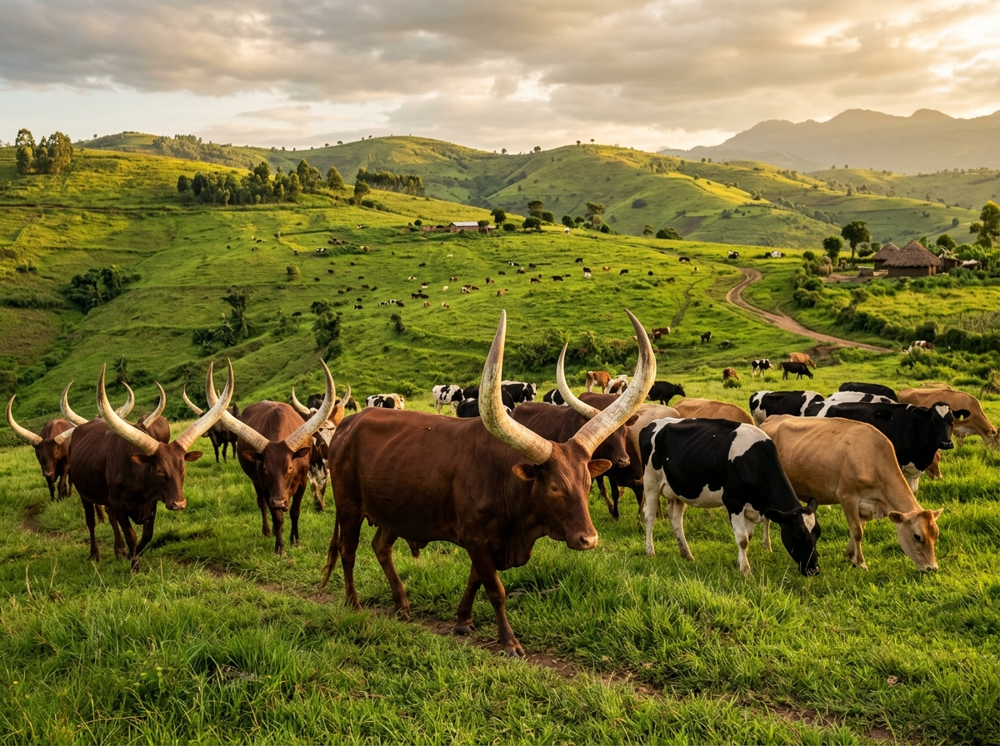

A clear line to a stronger, higher-yielding herd.
Professional herd management, breeding, genomic, and nutrition services, built on scientific evidence and tailored to your enterprise needs.
6 Core Service Areas
Integrated advisory, breeding, genetics, nutrition, labs, and sustainability.
Written Breeding Goals
Clear priority traits and realistic milestones you keep.
Genomic Rigor
On-farm sampling, genotyping, and parentage verification.
Countrywide Support
Serving commercial ranches, dairies, and breeding farms.
Our Core Pillars
Six dimensions to help your livestock enterprise thrive.
Every service connects field-tested agricultural management with modern genetic science to eliminate guesswork and maximize herd profitability.

Integrated Farm Advisory
Get expert advice on breeding, farm planning, enterprise evaluation, and day-to-day sustainable management of your farm enterprise.
Explore advisory


Laboratory and Equipment
Get guidance and support with laboratory setup, reliable equipment and consumables.
Explore lab services
Sustainability
Incorporate sustainability concepts into your enterprise operations.
Explore sustainabilityEnterprise Strategy Explorer
Tailored pathways for your specific livestock enterprise.
Select your enterprise to see how GenBionex combines breeding goals, nutrition, and genetics for your herd.
Dairy Cattle Enterprise
Maximize daily milk production, reproductive efficiency, and mastitis resistance through structured breeding indices and balanced lactation rations.
-
1
Linear Trait Scoring & Sire Selection Evaluate udder conformation, feet/legs, and milk components before insemination.
-
2
Stage-Specific TMR Ration Formulation Formulate high-yield feed balances using local silage, hay, concentrates, and minerals.
-
3
Heifer Genomic Profiling Identify the top replacement heifers early with DNA genotyping.
Expected Enterprise Deliverables
- Written 3-year breeding roadmap
- Lactation and dry-period feed protocols
- Calf rearing & colostrum management audit
- Quarterly herd performance reviews
Beef, Ankole & Crossbreeding
Enhance average daily weight gain, pasture hardiness, and carcass conformation while preserving valuable indigenous genetics.
-
1
Pedigree Purity & Conformation Scoring Objective evaluation of horn symmetry, body depth, and breed character for Ankole & Boran.
-
2
Crossbreeding Scheme Design Structured terminal or rotational crossing (e.g. Boran × Sahiwal × Simmental) without losing herd resilience.
-
3
Dry-Season Pasture & Supplementation Strategy Rotational grazing schedules and mineral lick protocols to prevent dry-period weight loss.
Expected Enterprise Deliverables
- Bull breeding soundness evaluations
- Pasture carrying capacity assessments
- Ranch handling corral layout plans
- Purity & parentage DNA reports
Goats & Small Ruminants
Optimize kid growth rates, prolificacy (twinning rates), and milk yields for Boer, Toggenburg, Savanna, and Mubende herds.
-
1
Breeding Buck Selection & Linebreeding Control Prevent inbreeding depression with verified pedigree tracking and buck rotation.
-
2
Raised Slatted Housing & Biosecurity Design Reduce parasite burden, foot rot, and kid mortality with optimal housing.
-
3
Fodder Bank Formulation High-protein forage banks (Calliandra, Leucaena, Brachiaria) for uninterrupted growth.
Expected Enterprise Deliverables
- Buck rotation schedules
- Kid survival protocols
- Intensive fodder bank layout
- Target weight-for-age benchmarks
Commercial Swine Systems
Improve feed conversion ratios (FCR), litter size at weaning, and strict biosecurity to safeguard intensive piggery investments.
-
1
Farrowing & Genetic Line Sourcing Parent stock selection (Large White, Landrace, Duroc) for lean meat and mothering ability.
-
2
Feed Least-Cost Formulation Balanced amino acid diets that reduce cost per kilogram of liveweight gain.
-
3
Pen Ventilation & Waste Management Optimized pig housing layouts for disease containment and thermal comfort.
Expected Enterprise Deliverables
- Least-cost diet recipes
- Farrowing-to-finish production calendars
- Biosecurity barrier protocols
- Breeding stock quarantine standards
Breeding Lab Setup & AI Stations
Set up compliant, functional on-farm or commercial artificial insemination, embryo, and genetic testing laboratory infrastructure.
-
1
Cleanroom Workflow & Bench Layout Design separation of processing, sterilization, and storage zones.
-
2
Cryogenic & Analytical Equipment Sourcing Procurement of LN2 tanks, centrifuges, thermal cyclers, and microscopes.
-
3
Standard Operating Procedures (SOPs) Written SOPs for sample tracking, cryopreservation, and quality assurance.
Expected Enterprise Deliverables
- Equipment specification & bill of quantities
- Laboratory biosafety blueprints
- Technician training guidelines
- Consumable inventory schedules

Working with GenBionex
Scientific rigour meets working-farm scale.
Every engagement is built around your specific farm size, your ecological zone, and your target commercial market — nothing templated, nothing based on unverified guesswork.
- Plans built for your scale
- Scheduled on-farm visits
- Written protocols you keep
- Herd data handled securely
- Equipment & consumables support
- Independent pre-purchase animal evaluation
- Plain-language reporting
How It Works
Four steps from initial audit to evaluated herd review.
-
Step 01
Farm Visit & Baseline Audit
We visit your farm, inspect animal condition, records, feeding systems, and record where your herd stands today.
-
Step 02
Written Breeding & Feed Goal
You receive a written, prioritized breeding and nutritional strategy matched precisely to your enterprise targets.
-
Step 03
Field Implementation
We support you in putting the breeding protocols, DNA sampling, sire selection, and feeding adjustments into practice.
-
Step 04
Evaluation & Target Review
Calf vigor, weight gains, and lactation performance are evaluated, reported plainly, and breeding goals are refined.
Frequently Asked Questions
Everything you need to know about working with GenBionex.
Our qualified field personnel visit your farm and collect non-invasive or minimal tissue samples (such as hair follicles with root bulbs or ear tissue notches) under hygienic, stress-free handling. Samples are labeled with unique barcoded identifiers, securely logged into your herd ledger, and stored for genotyping and parentage validation.
Yes. We conduct independent pre-purchase evaluations on-site at the seller's farm. We inspect reproductive conformation, structural soundness, scrotal circumference, breed purity, and disease history against your farm's written breeding goal so you never invest in sub-optimal stock.
We work with progressive emerging farmers with small herds (e.g. 5 to 20 head) establishing their first structured breeding plan, all the way to commercial cattle ranches and dairy enterprises with hundreds of animals. Every recommendation is tailored directly to your scale and capital budget.
Feed constitutes over 65% of total livestock operating costs. By formulating least-cost rations that balance available on-farm grasses, silage, and local agro-byproducts with precise mineral and protein premixes, we help you eliminate feed wastage, boost milk yields, and accelerate fattening periods.
Using molecular DNA markers, we can definitively establish sire and dam parentage with 99.9% statistical certainty. This provides legal and pedigree clarity for disputed breeding stock, prize bull sales, or purebred registry compliance.
Through our Sustainability pillar, we help you build climate resilience directly into your breeding and herd management plan — from heat-tolerant and drought-resilient genetic selection, to adaptive rotational grazing and pasture restoration, to feed optimization that reduces methane output and conserves bio-resources. These practices are woven into your overall strategy rather than treated as a separate add-on.
We recommend reaching out at least 2 to 3 weeks prior to purchasing breeding bulls or cows. This provides sufficient time for our advisors to conduct structural evaluations, review health records, and run parentage or genomic verification tests before you complete the transaction.
While a significant portion of our work focuses on dairy, beef, and indigenous Ankole cattle, we also provide specialized breeding, genomic, and nutritional strategy services for goats, sheep, and commercial swine enterprises.
Yes. Under our Lab & Biomedical Equipment pillar, we assist farms with designing breeding support facilities, procuring cryo-storage equipment (such as liquid nitrogen tanks), sourcing consumables, and setting up hygienic operational protocols.
No. Our field team operates directly on-site across Uganda. We perform hands-on data collection, physical animal scoring, and tissue sampling on your farm, and we deliver paper or downloadable offline reports that you can easily keep and reference.
We do not mix feed rations for you. But we guide you on the best feeding options available locally.
Sampling is fast and minimal. Our field personnel use hygienic tissue notchers or collect hair follicles with intact root bulbs. The procedure takes only a few minutes per animal, causes minimal stress, and requires no special facilities beyond standard animal handling chutes or crushes.
Once samples are collected on-farm and logged with unique barcoded identifiers, standard molecular profiling and parentage verification results are delivered within 2 months, accompanied by a clear, non-technical explanatory summary.
Yes. During our implementation phase, we provide hands-on training for farm managers and herdsmen on proper feed mixing, heat detection, colostrum management, record-keeping, and stress-free animal handling techniques.
We blend scientific genomic testing with practical, working-farm experience. Rather than generic advice, every recommendation — from written breeding goals to specific feed formulations — is tailored to your farm's local ecological zone, budget, and long-term business goals.
Ecological conditions, forage availability, and disease challenges vary significantly between regions like cattle corridor rangelands and highland dairy zones. We customize all breeding, grazing, and nutritional protocols to match the specific climate, rainfall patterns, and native pastures of your district.
Yes. We view farm management as a continuous partnership. Following your baseline audit and strategic plan delivery, our team conducts scheduled follow-up visits and quarterly performance evaluations to review growth rates, reproduction stats, and feed efficiency.
No. GenBionex provides breeding and herd management services, but it does not provide veterinary health services.
If available, having basic records on animal counts, calving dates, daily milk yields, breeding history, and current feed purchases is helpful. However, if formal records do not exist, our team will conduct a complete physical assessment during our initial audit to establish a baseline.
Simply contact our team via phone, WhatsApp, or our online inquiry form. An advisor will discuss your enterprise goals, answer any preliminary questions, and schedule an initial on-farm baseline audit at a convenient time for you.
Ready to transform your herd's genetics and performance?
Speak with a senior GenBionex livestock breeding advisor today. We respond to all inquiries within two working days.
Growing with Uganda's Livestock Farmers
148+
farm enterprises and livestock managers supported across Uganda